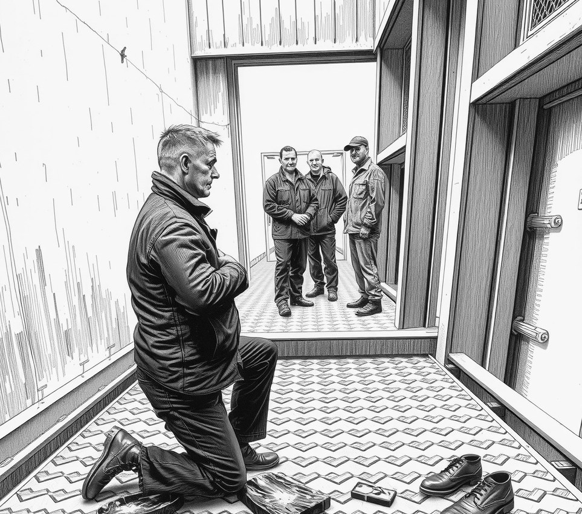

MOUNT ORESTES . 8 July 4917

Internal logs from the Mount Orestes lift system show managers hushed up a fatal four-hundred-floor cable snap to hold a silent light-vigil for the cab's mahogany lining.
The hoist cable parted on Thursday inside Shaft Twelve, dropping Car Forty two thousand metres into the mountain sump. Six transit workers were killed on impact.
Transport director Sola Nduka locked the emergency brakes thirty seconds later. He sent no rescue team. Instead, Nduka ordered every lift display across the lower wards set to half-brightness.
Grid workers stood facing the empty shaft in silence.
"It was a dark day for internal joinery," Nduka wrote in a station-wide broadcast sent four minutes after the drop. "Car Forty was our finest timber car. It never groaned."
Shift clerk Kaelen Voss leaked the network transcripts alongside an audio memo after receiving orders to wax the remaining hoist doors with floral polish.
"We assumed the silence was for the crew," Voss said on the recording. "Then the chief warned us not to confuse essential panelling with disposable staff."
Nduka rejected claims of improper conduct in a follow-up directive, noting six replacement technicians had already arrived from Level Two by noon.
"Human labour is easily replaced," Nduka wrote. "Grain of that density takes three hundred years to harden under glow-tubes."
A salvage team was finally lowered into the sump on Friday, armed strictly with wood filler.